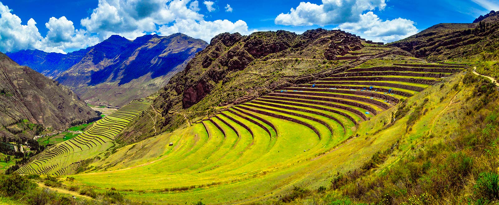

Historia
Pisaq es conocido por sus impresionantes terrazas agrícolas y su mercado tradicional. Este lugar fue una importante ciudad inca y centro ceremonial.
Tour y Actividades

- Explorar el complejo arqueológico de Pisaq.
- Visitar el mercado artesanal.
- Caminar por sus senderos y disfrutar de las vistas panorámicas.
Comida

Prueba los platos típicos de la región como el choclo con queso, la trucha frita y la chicha morada en los mercados locales.
Consejos Prácticos
- Lleva ropa cómoda y calzado adecuado para caminar.
- Visita temprano en la mañana para evitar multitudes.
- No olvides tu cámara para capturar las vistas impresionantes.
Cuéntanos tu experiencia
¿Has visitado Pisaq? Comparte con nosotros lo que más te gustó de este maravilloso lugar.
Sección de Comentarios
Fechas Festivas
- Junio: Inti Raymi (Fiesta del Sol).
- Octubre: Feria de Todos los Santos.
- Agosto: Festividad de la Virgen Asunta.